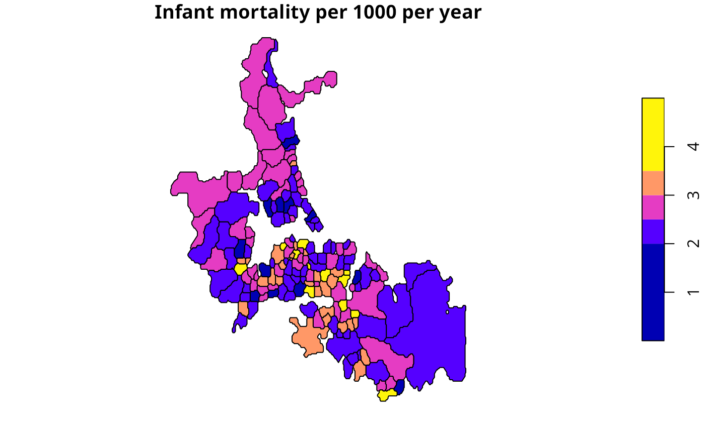

Global Empirical Bayes estimator
EBest.RdThe function computes global empirical Bayes estimates for rates "shrunk" to the overall mean.
Details
Details of the implementation for the "poisson" family are to be found in Marshall, p. 284–5, and Bailey and Gatrell p. 303–306 and exercise 8.2, pp. 328–330. For the "binomial" family, see Martuzzi and Elliott (implementation by Olaf Berke).
Value
A data frame with two columns:
- raw
a numerical vector of raw (crude) rates
- estmm
a numerical vector of empirical Bayes estimates
and a parameters attribute list with components:
- a
global method of moments phi value
- m
global method of moments gamma value
References
Marshall R M (1991) Mapping disease and mortality rates using Empirical Bayes Estimators, Applied Statistics, 40, 283–294; Bailey T, Gatrell A (1995) Interactive Spatial Data Analysis, Harlow: Longman, pp. 303–306, Martuzzi M, Elliott P (1996) Empirical Bayes estimation of small area prevalence of non-rare conditions, Statistics in Medicine 15, 1867–1873.
Author
Roger Bivand Roger.Bivand@nhh.no and Olaf Berke, Population Medicine, OVC, University of Guelph, CANADA
Examples
auckland <- st_read(system.file("shapes/auckland.gpkg", package="spData")[1], quiet=TRUE)
res <- EBest(auckland$M77_85, 9*auckland$Und5_81)
attr(res, "parameters")
#> $a
#> [1] 7.284173e-07
#>
#> $b
#> [1] 0.002633436
#>
auckland$estmm000 <- res$estmm*1000
plot(auckland[,"estmm000"], breaks=c(0,2,2.5,3,3.5,5),
main="Infant mortality per 1000 per year")

data(huddersfield, package="spData")
res <- EBest(huddersfield$cases, huddersfield$total, family="binomial")
round(res[,1:2],4)*100
#> raw estmm
#> 1 42.86 34.44
#> 2 28.95 29.56
#> 3 28.31 28.94
#> 4 21.43 28.93
#> 5 33.33 30.72
#> 6 30.86 30.43
#> 7 33.70 31.85
#> 8 45.61 35.93
#> 9 26.67 28.95
#> 10 29.41 29.95
#> 11 27.76 28.36
#> 12 33.75 31.75
#> 13 32.67 31.84
#> 14 22.91 25.36
#> 15 34.21 32.33
#> 16 33.77 31.72
#> 17 29.09 29.69
#> 18 15.87 24.36
#> 19 40.91 32.11
#> 20 40.00 31.01
#> 21 28.79 29.53
#> 22 38.89 31.47
#> 23 28.32 29.10
#> 24 33.33 31.44
#> 25 13.95 22.36
#> 26 33.77 31.72
#> 27 31.58 30.31
#> 28 33.33 30.42
#> 29 26.67 28.26
#> 30 63.64 33.57
#> 31 34.38 32.24
#> 32 20.00 27.62
#> 33 19.15 24.60
#> 34 25.53 28.54
#> 35 24.14 27.79
#> 36 44.00 32.98
#> 37 25.33 27.95
#> 38 18.18 26.96
#> 39 31.78 30.97
#> 40 32.20 30.88
#> 41 26.19 28.23
#> 42 19.05 26.65
#> 43 16.67 26.81
#> 44 20.00 28.66
#> 45 32.99 31.54
#> 46 50.00 31.97
#> 47 37.21 32.30
#> 48 32.79 31.13
#> 49 38.89 31.47
#> 50 25.00 27.26
#> 51 26.03 28.29
#> 52 30.43 30.18
#> 53 19.75 25.28
#> 54 50.00 31.61
#> 55 21.62 27.67
#> 56 22.22 27.88
#> 57 36.36 30.71
#> 58 31.25 30.22
#> 59 0.00 29.73
#> 60 29.41 29.95
#> 61 31.16 30.71
#> 62 33.33 30.58
#> 63 33.87 32.22
#> 64 30.00 30.04
#> 65 30.34 30.19
#> 66 40.74 35.00
#> 67 46.43 38.96
#> 68 34.21 31.91
#> 69 24.26 26.10
#> 70 29.41 29.75
#> 71 47.17 39.13